微出国 · 学
路线 › 知识卡
知识卡：不看正文也能拿到核心内容
全站 58 张知识卡，按页面分组。一张卡只画正文里的一段——一个判断、一条算法、一份清单；卡上每个字都能在对应页面的正文里找到（资料核验 2026-08-20）。
路线（首页）

共管物业的出租与年龄限制


BC 炒房税：考试口径里没有的一整个税种


地方政府法：分区权被省里收走一半


住宅收房：2026 年的现行地图


法律基础：四处错位与打官司走哪个门
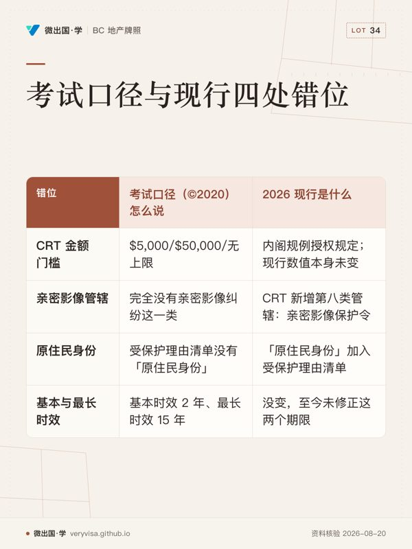
- 先看先看金额那一行：数字没动，变的是数字由哪里规定。
- 易漏时效这一项是核实后没变，不要把对照表全部理解成规则更新。
- 下一步去讲义按生效/核实日逐项标版本。
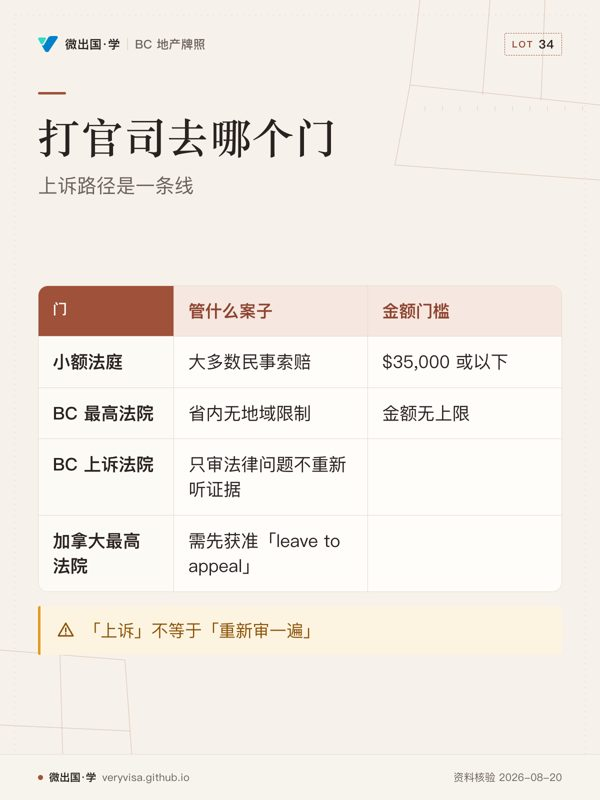
- 先看先用金额栏确定初审入口，再看往上的审查范围。
- 易漏除准许重审外，后面的层级不重新听取证据。
- 下一步去练习做起诉地点和上诉去向题。
三部法律各管一段，公众保护四件套
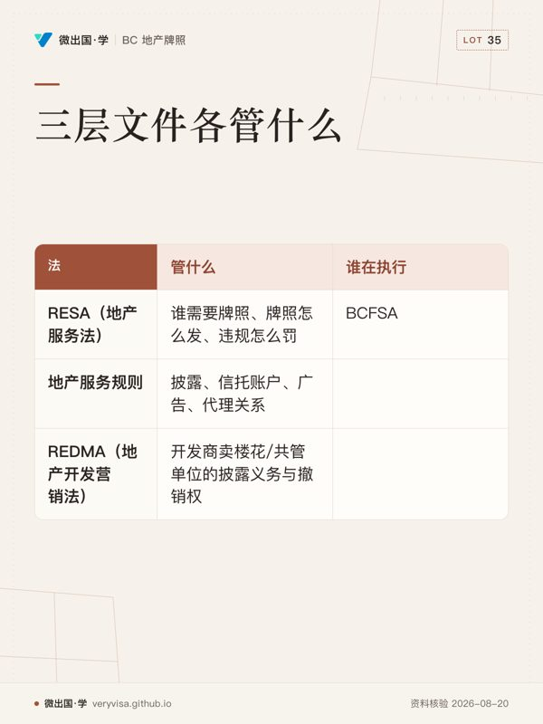
- 先看先看左列各自处理哪类问题，别把三个文件混在一起。
- 易漏执行栏没有写满：摘录只明确交代了 BCFSA 的部分职责。
- 下一步去讲义核对每一层的现行版本与执行主体。
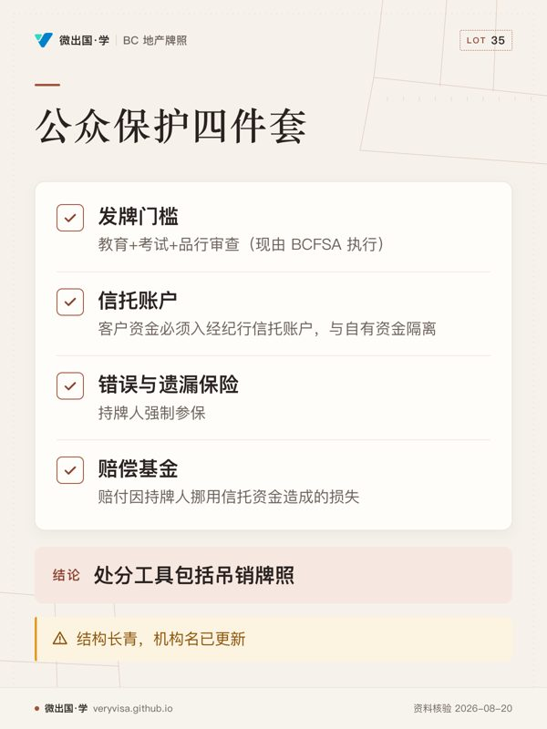
- 先看先区分事前约束和损失补偿，四项机制不是一类作用。
- 易漏机构变化不等于框架消失；独立办公室已不存在。
- 下一步去练习把保护机制和处分后果分开归类。
地权：两处正在被现行判决改写，共有两种登记
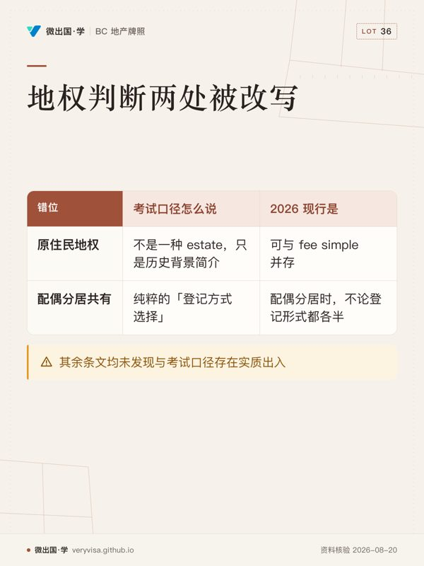
- 先看先看右栏的两处新结论，它们分别影响地权和家庭财产。
- 易漏第一个判决正在上诉；现行题按题干时期，敏感地块实务上须转介产权律师。
- 下一步去讲解对照这两处变化各改了哪一步判断。
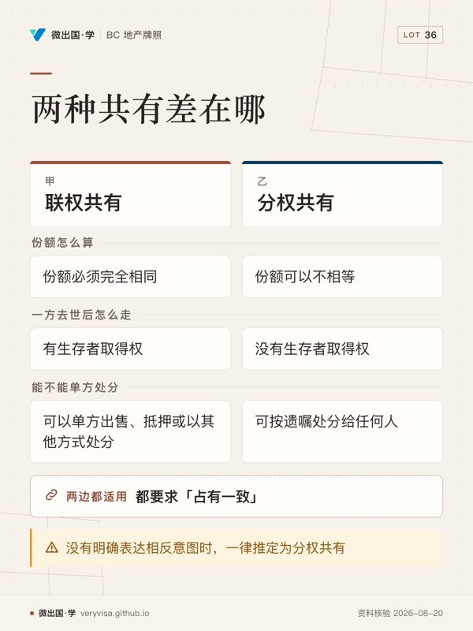
- 先看先看身故后的去向，这一行最容易把两种共有混在一起。
- 易漏联权一方自行处分后，就那一份会转成分权关系，其余人之间仍维持原关系。
- 下一步去练习把遗嘱、出售、抵押分别代入两种共有。
登记：透明申报表这一步，与产权上各有各的钟
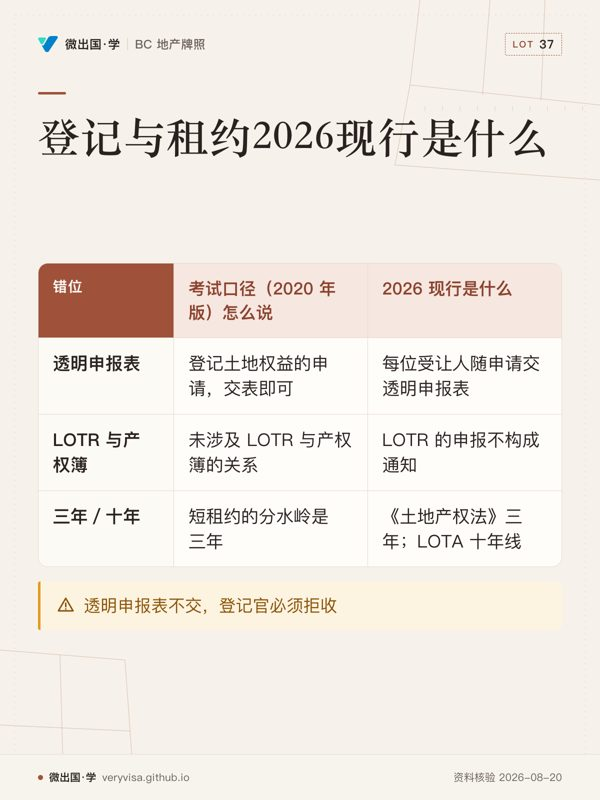
- 先看先扫右栏，找旧版没覆盖或另设规则的地方。
- 易漏两套簿子分别查；租约题先分清适用哪一部法。
- 下一步去练习做情境判断，再把登记与租约问题问持牌专业人士。
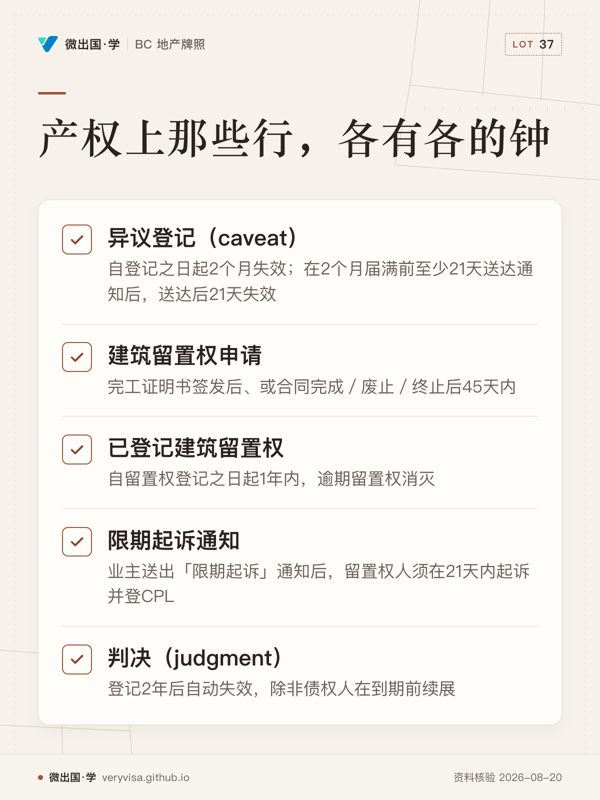
- 先看先找会失效的项目，再看有没有能把期限提前的通知。
- 易漏重复产权证被取出而没交回，登记处就不办转让、按揭或长期租约的登记。
- 下一步去练习做交割题，把清偿或续展安排问持牌专业人士。
执业责任：处分工具从三样到十项，还有时效
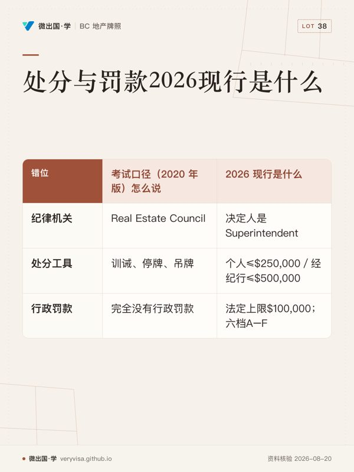
- 先看先对照处分这一行，罚款上限最容易沿用旧记忆。
- 易漏行政罚款还有覆盖条文与按日累加规则，不能只盯上限。
- 下一步去练习区分纪律与行政罚款，再把适用程序问持牌专业人士。
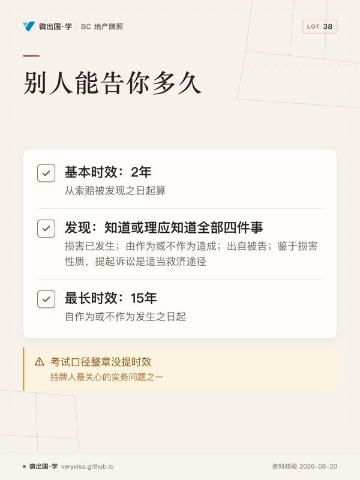
- 先看先分清两个起算点，成交日并不是基本时效的起点。
- 易漏隐瞒行为另有例外，会中止起算；纪律程序也没有一般性的时效上限。
- 下一步去练习辨认「发现」时点，再把具体索赔日期问持牌专业人士。
共管物业：一页错位，与 2023 年才有的充电制度
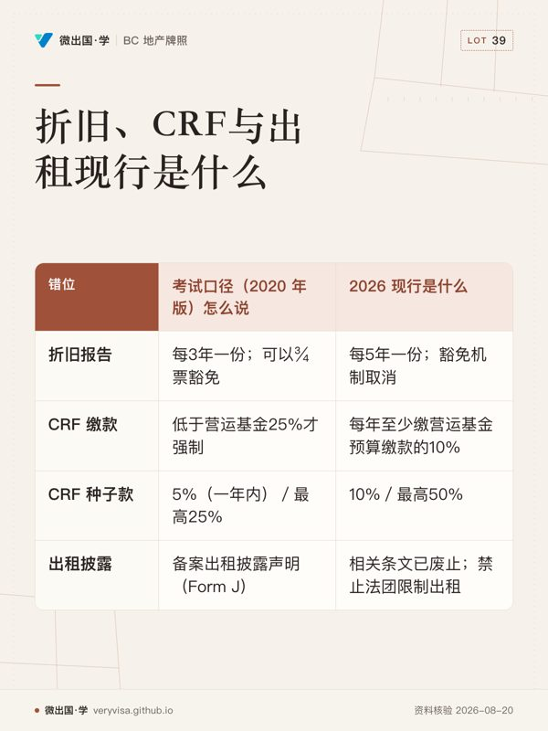
- 先看先看折旧与CRF两行，旧记忆最容易直接套错。
- 易漏折旧报告还有区域过渡与指定专业要求，不能只看周期变化。
- 下一步去练习判断时间点，再向持牌专业人士确认适用区域与日期。
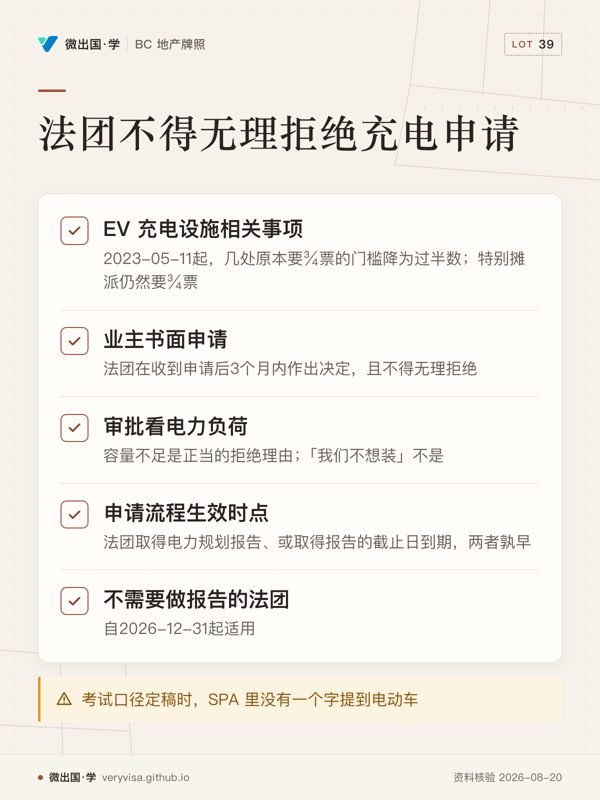
- 先看先看书面申请这一项，权利、答复期限和拒绝边界都从这里展开。
- 易漏「不得无理拒绝」不等于不得拒绝，容量不足仍可成为正当理由。
- 下一步去讲解看完整流程，把容量与车位条件带给持牌专业人士核对。
财务报表：经纪行自己也是申报主体
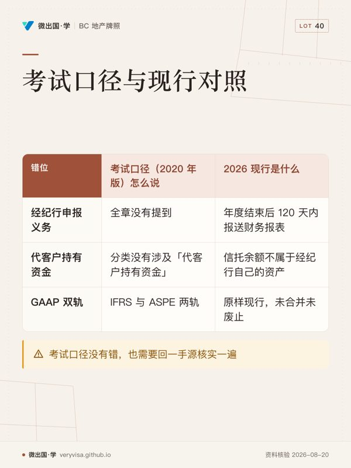
- 先看先看双轨那行：它说明对照不等于发现冲突。
- 易漏前两行是新增要求；第三行只是核实后确认没变。
- 下一步去练习，逐行判断是规则变化还是确认原样现行。
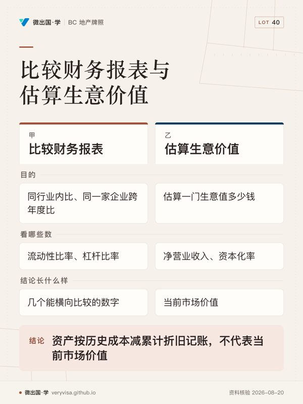
- 先看先看两栏的结果形式，别把账上数字当成市场结论。
- 易漏本页只区分用途；收益法估价的技术在后面内容，这里不展开。
- 下一步去讲义核对比率分析与收益法估价分别解决什么问题。
职业伦理：八处错位与六档罚款
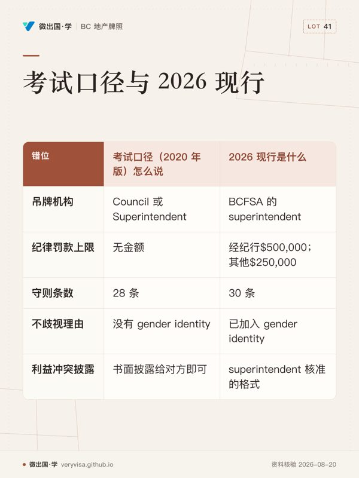
- 先看先看金额与条数两行：这类变化最容易被旧口径带偏。
- 易漏机构和披露格式也已改；不歧视理由清单加入了新内容。
- 下一步去练习，逐行写出旧说法与现行口径的差别。
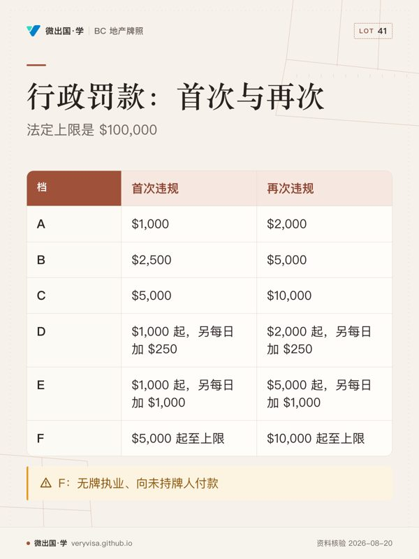
- 先看先看 D、E 两档：它们的金额会随天数继续增加。
- 易漏这些是行政罚款；纪律处分的罚款上限另有规则，不能混成一张表。
- 下一步去练习，先找对应档，再判断是首次还是再次。
合同法：书面要求的三条路，电子合同的两条线
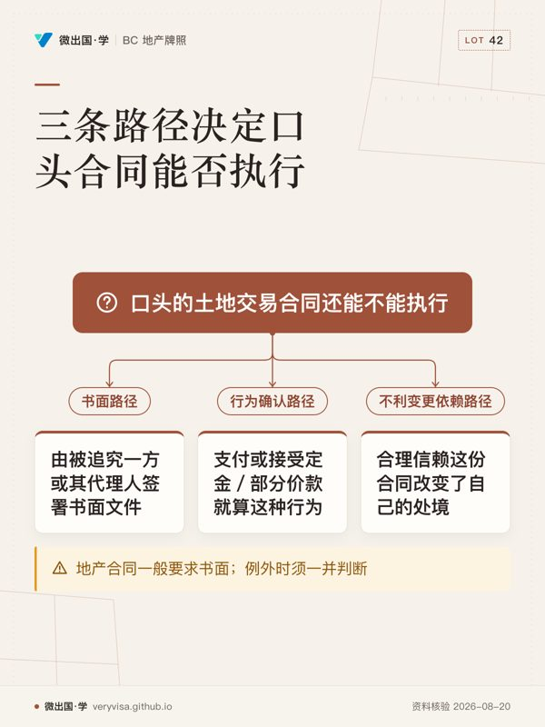
- 先看先看三条分支分别靠什么事实成立，不要把「必须书面」当成全部结构。
- 易漏选择题里，特殊情况下可执行不能当成默认答案；实务问题应转介律师核实。
- 下一步去练习，用行为与信赖两类题干检验自己是否会分路。
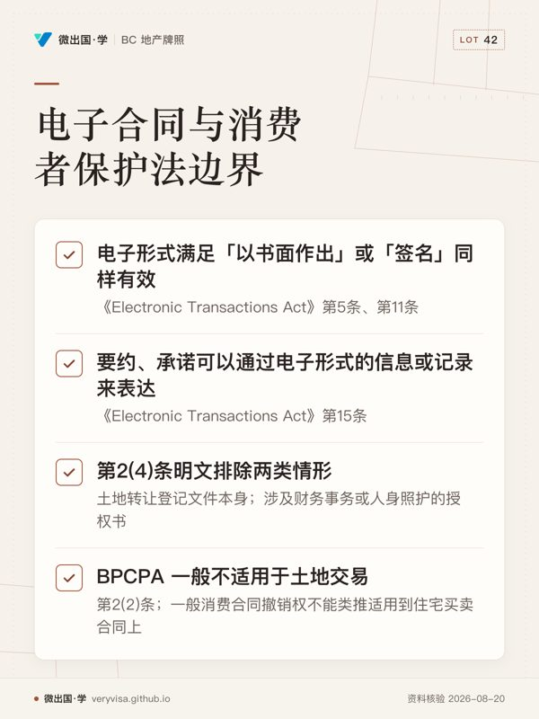
- 先看先把签署成立与撤销权分开，别用消费者规则替代电子交易规则。
- 易漏明文排除的是特定文件；土地买卖合同本身与最终登记文件不能混在一起。
- 下一步去讲解核对边界；客户问能否反悔时，带具体交易事实找律师。
买卖合同：冷静期与楼花七天是两套，逐条错位
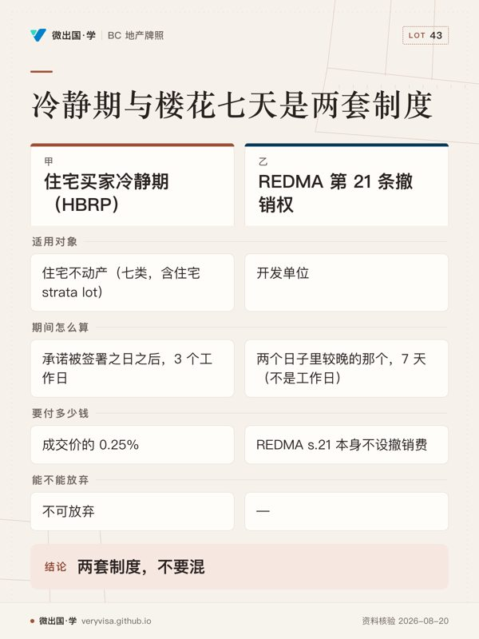
- 先看先辨交易类型，再看计时单位；这两处一错，后面的费用判断也会跟着错。
- 易漏还要留意楼花的起算点与过户后效果；这两项没放进图里，不能凭转售规则类推。
- 下一步去练习做情境题，先判断新盘还是转售，再决定查哪套制度。
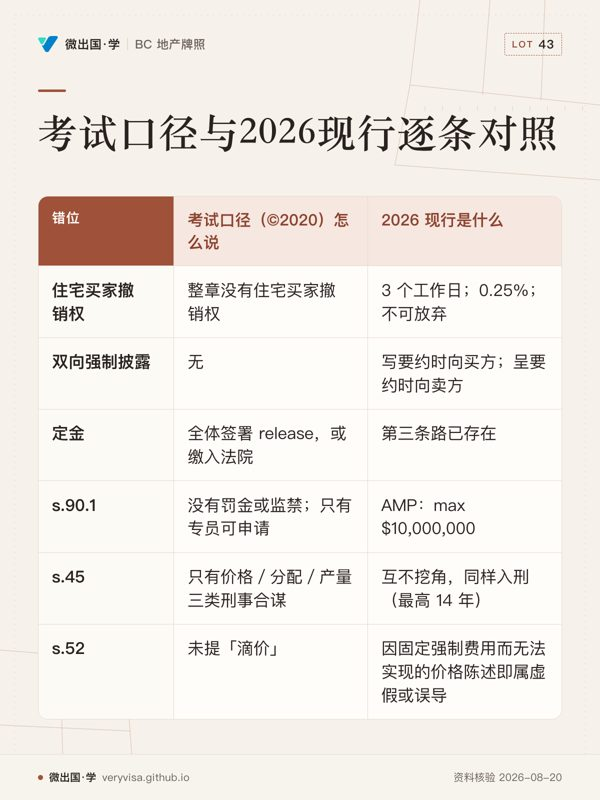
- 先看先扫有金额、刑事后果和新披露义务的行；这些最容易受旧版记忆干扰。
- 易漏表只挑六项；监管者、表格栏目等其他变化仍要回正文核对。
- 下一步去进度标记已更新的知识点，再用模考检查是否仍沿用旧版说法。
代理法：旧条号要翻译，三种关系怎么分
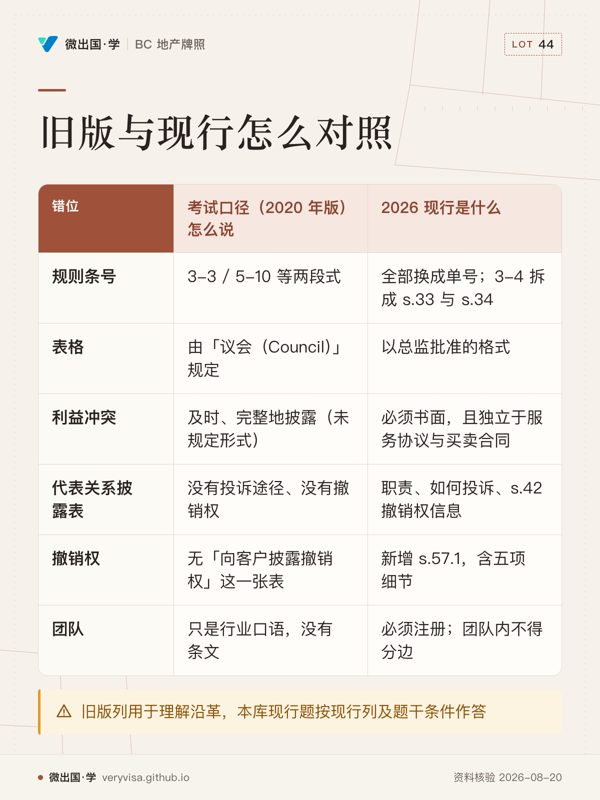
- 先看先看新增表格和书面要求，它们会直接改变现行作答。
- 易漏条号、称谓、披露形式都可能变化，不能只把旧数字换成新数字。
- 下一步去练习，用旧题逐项判断现行规则。
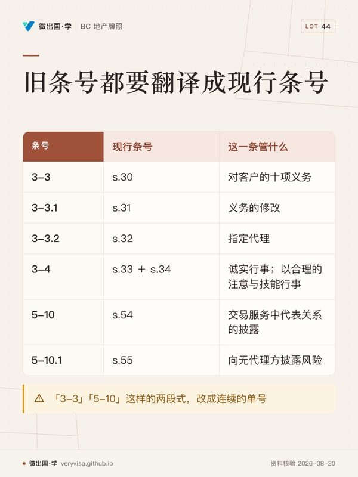
- 先看先找旧写法，再横向确认现在管的是哪项义务或披露。
- 易漏有的旧条不是一对一换号，而是被拆开处理。
- 下一步去练习，把旧题条号先翻成现行写法。
按揭市场：考试口径举的公司名还剩几个
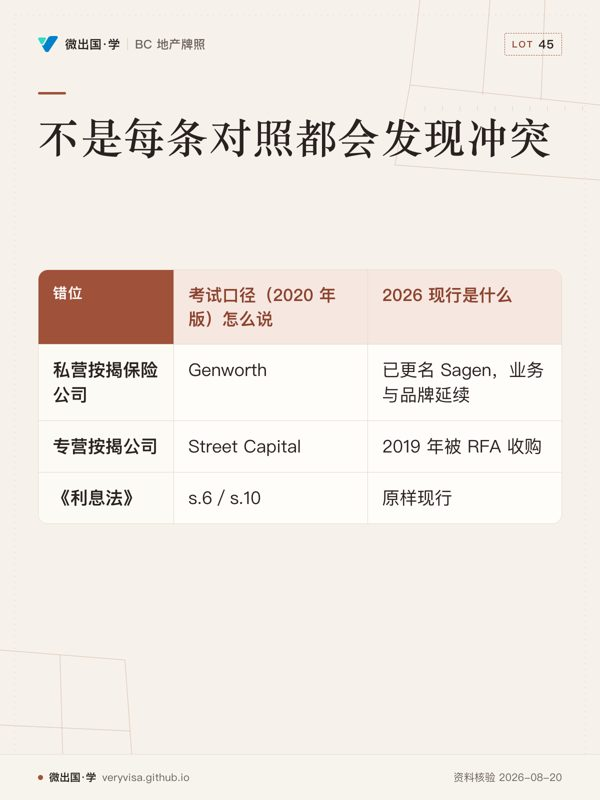
- 先看先看唯一没变化的一行，确认对照不等于默认挑错。
- 易漏公司改名或被收购，不代表对应业务已经从市场消失。
- 下一步去讲义，把公司历史与仍有效规则分开记。
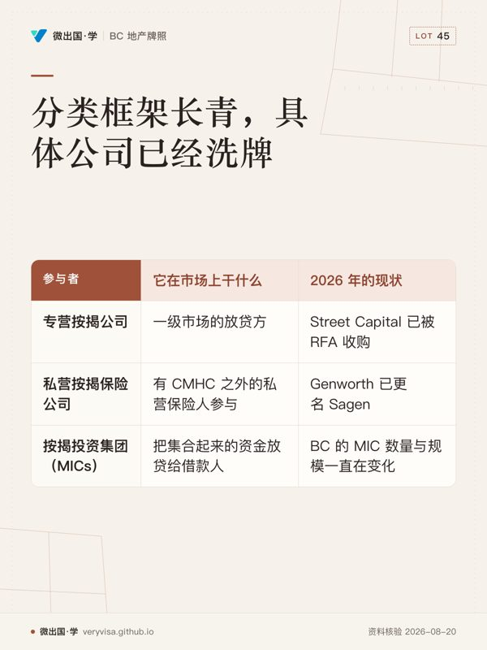
- 先看先把角色与现状分开读：前者讲作用，后者讲名称或规模。
- 易漏旧公司名只适合解释历史；给客户联系方式时要核实现行名称。
- 下一步去练习，把名称变化和市场角色拆开判断。
利率与按揭：摊还期上限那句话错在定性
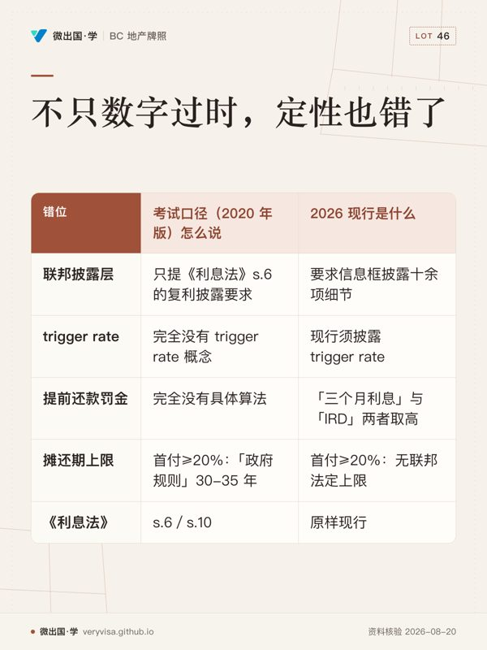
- 先看先看摊还期和罚金：一个涉及规则性质，一个没有统一公式。
- 易漏最后一行是核实后没变，不能把对照表理解成全部推翻旧口径。
- 下一步去练习，先分辨法律要求、披露要求和机构政策。
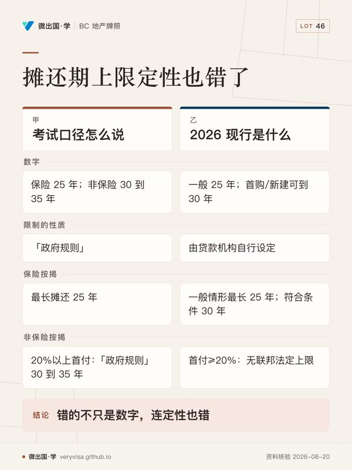
- 先看先看限制性质，它决定非保险部分不能只改一个数字。
- 易漏首次购房者和新建物业的放宽，只在需要按揭违约保险的一段讨论。
- 下一步去讲解，先判断题干问首付比例还是法律性质。
按揭法：止赎只有法院一条路
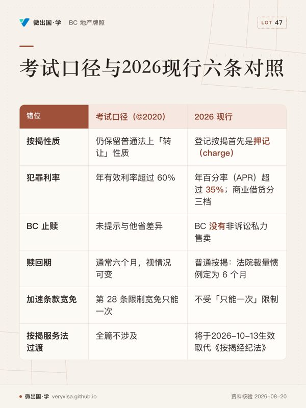
- 先看先看犯罪利率、止赎和法律过渡，优先确认会改变当下判断的项目。
- 易漏商业借贷另有金额区间；赎回期还要区分普通按揭与 agreement for sale。
- 下一步去讲义核对依据与生效日，再带具体合同找持牌专业人士复核。
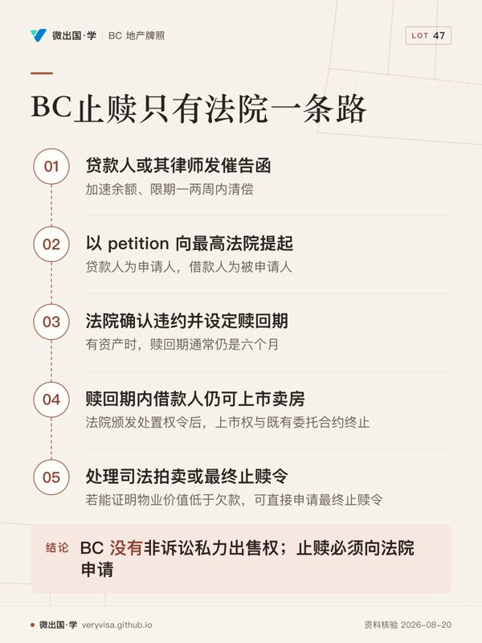
- 先看先看结果条，确认贷款人不能跳过法院自行出售物业。
- 易漏投资或商业物业与「农民」有额外通知前提，漏发会让整个程序归于无效。
- 下一步去讲解顺着节点看，再把物业用途与借款人身份带给持牌专业人士。
按揭分析：提前还款罚金哪一种更贵
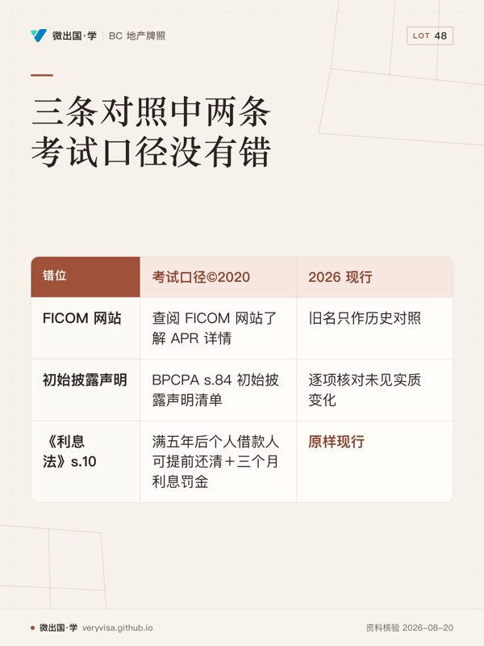
- 先看先看右列：一处旧名变化，两处是在核实后确认规则仍沿用。
- 易漏FICOM 只作历史对照；另外两项不是冲突，不能因为看起来稳定就跳过核实。
- 下一步去讲义查看 UWS 出处，再用练习区分旧称与仍沿用的规则。
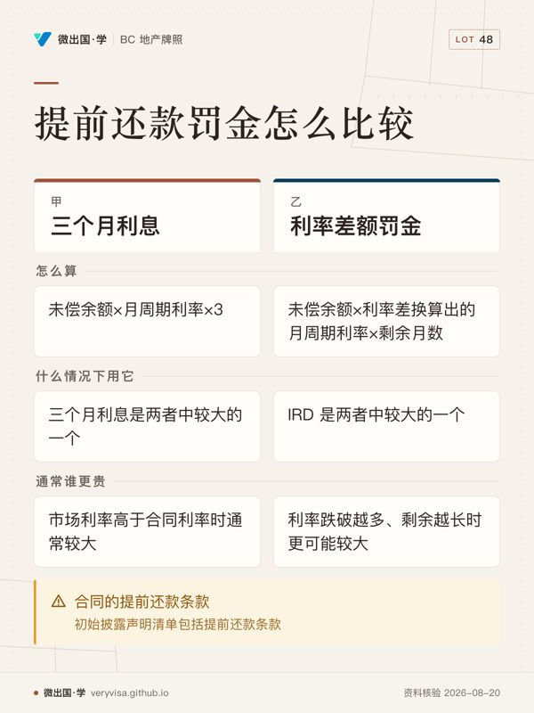
- 先看先看最后一行：利率方向不同，较大的那一边也会变。
- 易漏具体合同的提前还款条款要单独核对，不能只凭比较公式判断实际罚金。
- 下一步去练习换不同市场利率情景，再带合同条款找持牌专业人士复核。
核保与资格：压力测试与四道硬门槛
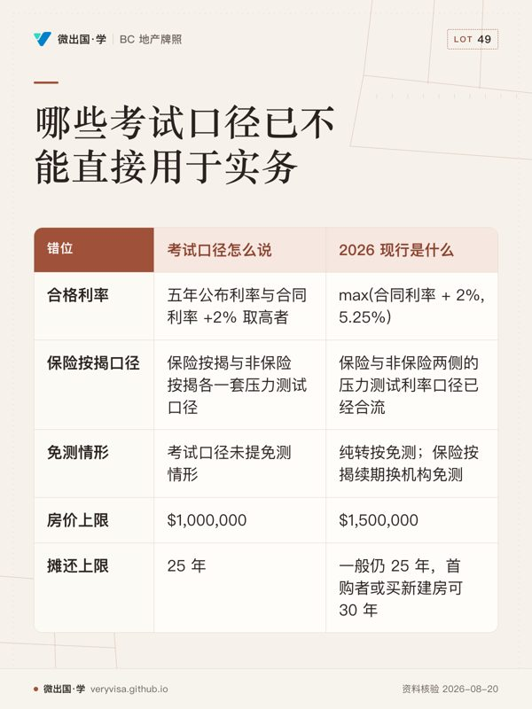
- 先看先看金额与年限两行：这些变化会直接改写实务判断。
- 易漏免测条件很窄，而且不免尽职调查；续期换机构只写保险按揭。
- 下一步去讲义核对生效日，再按客户交易类型找持牌专业人士确认。
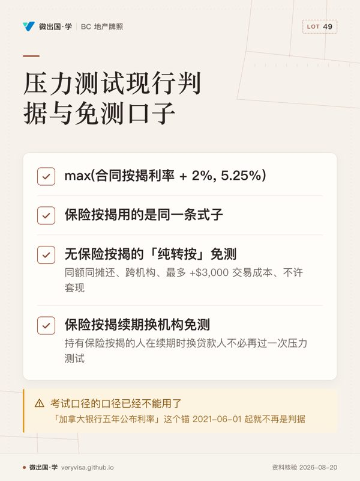
- 先看先看取高逻辑，不要把安全边际当成实际利率。
- 易漏纯转按条件很窄，且只免规定的合格利率；新机构仍要当新贷款审。
- 下一步去练习区分要测与免测，再带具体续期或转按情形找持牌专业人士。
物业税：买入时的两道税与门槛金额
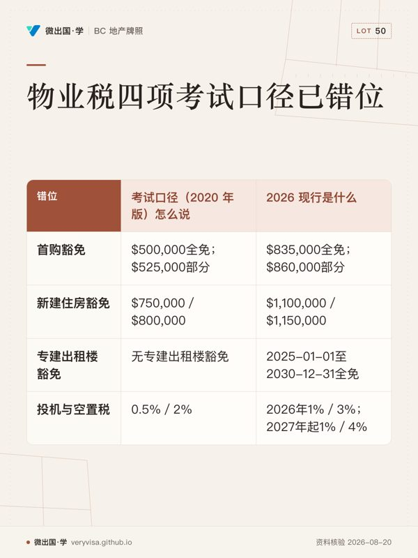
- 先看先找哪些旧说法因政策调整已经不能直接沿用。
- 易漏出租楼减免有有效期，空置类税率还会跨年度再变。
- 下一步去练习，按交易类型和年份定位现行规则。
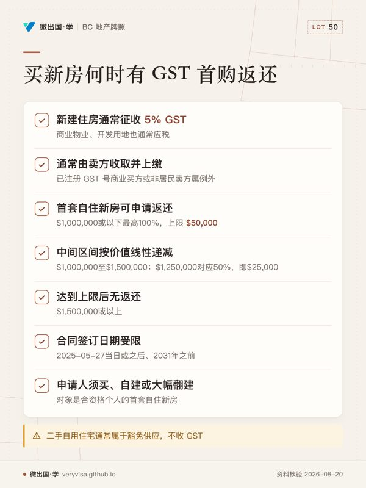
- 先看先分交易性质，再核买方身份与签约时点。
- 易漏金额区间只决定返还幅度，是否合资格还要看用途与身份。
- 下一步去练习，用房型、用途、签约日逐项判断。
建筑：规范换了一整版，2-5-10 反而没变
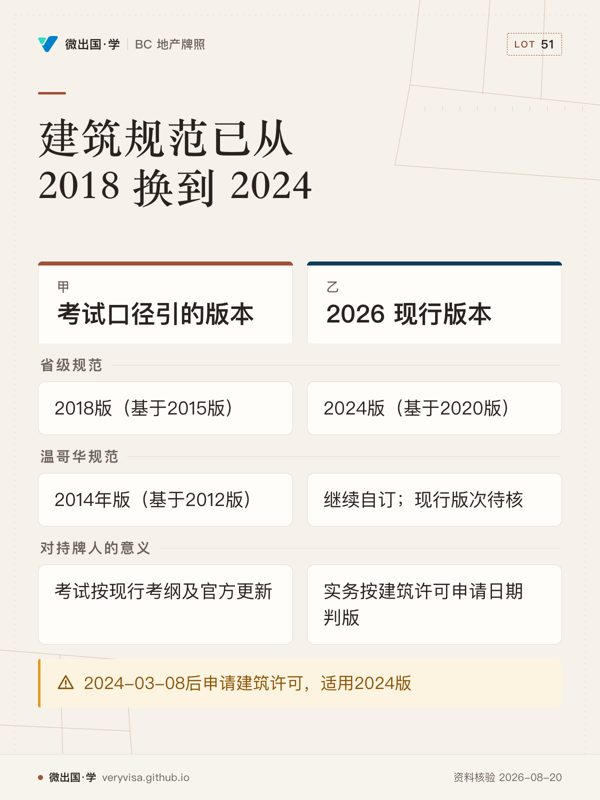
- 先看先把市界特例与全省规则分开，再检查采用依据。
- 易漏生效并不等于所有既有项目同步换版。
- 下一步去练习，用报批时点做一次适用判断。
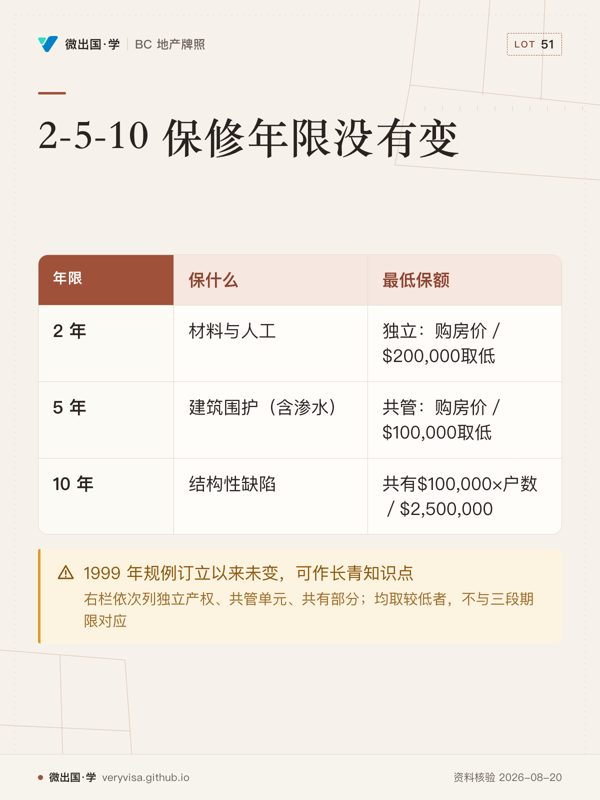
- 先看左侧记缺陷类别，右侧当作产权保额索引。
- 易漏自建授权可能免强制保险，但转售披露责任仍在。
- 下一步去练习，分清期限、产权形态和豁免。
估价入门：评估报告与 CMA 的分界
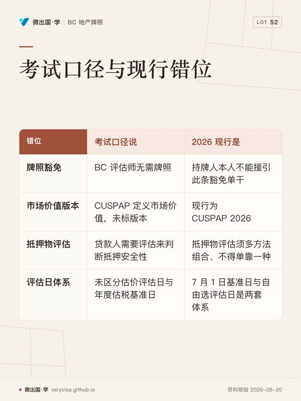
- 先看先看最后一行，最容易把年度估税与估价报告混在一起。
- 易漏首行还有限定：须经经纪公司具名或放弃牌照。
- 下一步去讲义核对四条出处，再带适用情形问持牌专业人士。
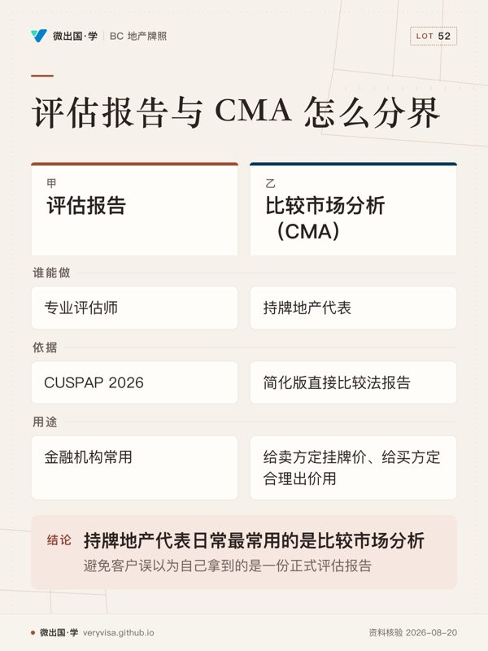
- 先看先看用途一行，先区分金融机构与买卖双方的使用场景。
- 易漏旧评估报告要先弄清评估目的和评估日，结论未必能直接套用。
- 下一步去练习，带着工作范围问题找持牌专业人士。
直接比较与成本法：折旧的四个格子
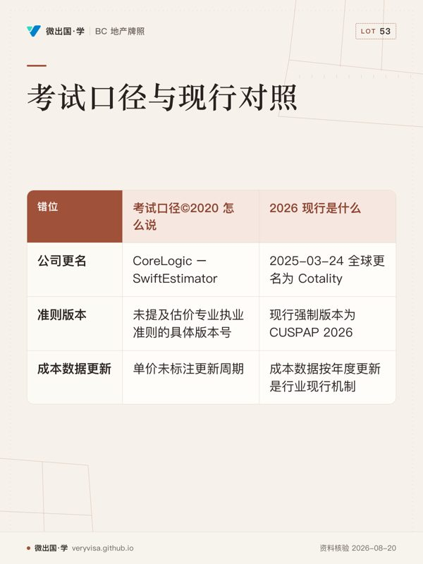
- 先看先看首行：名称更新，不等于品牌与业务消失。
- 易漏三条都不是法律规定变了；会过期的是具体公司、版本号与年份。
- 下一步去讲义核对具体公司、版本号与按年更新机制。
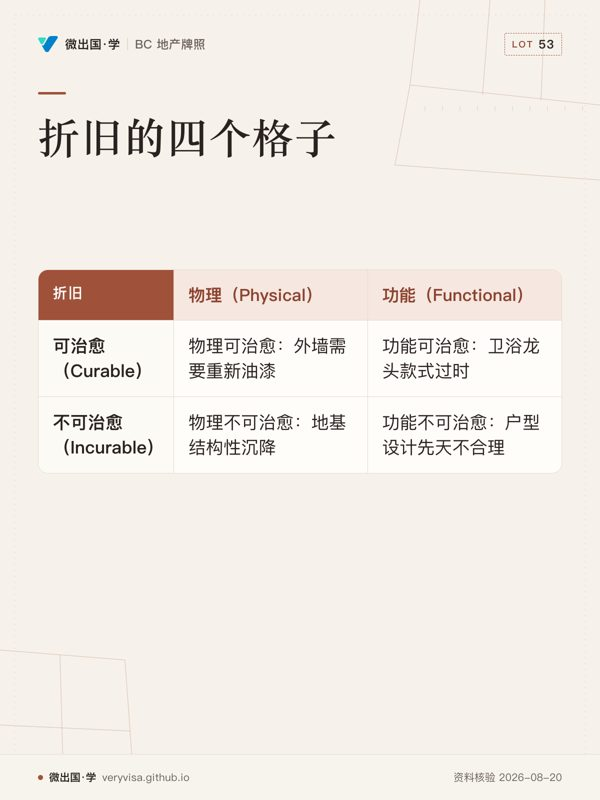
- 先看先沿可治愈这一轴看，真正分界是修复成本与价值增量。
- 易漏有效年龄不一定等于实际建成年数，保养情况会改变判断。
- 下一步去练习，用经济性判断每个例子落在哪个格子。
收益法：哪四样不算进净营业收入
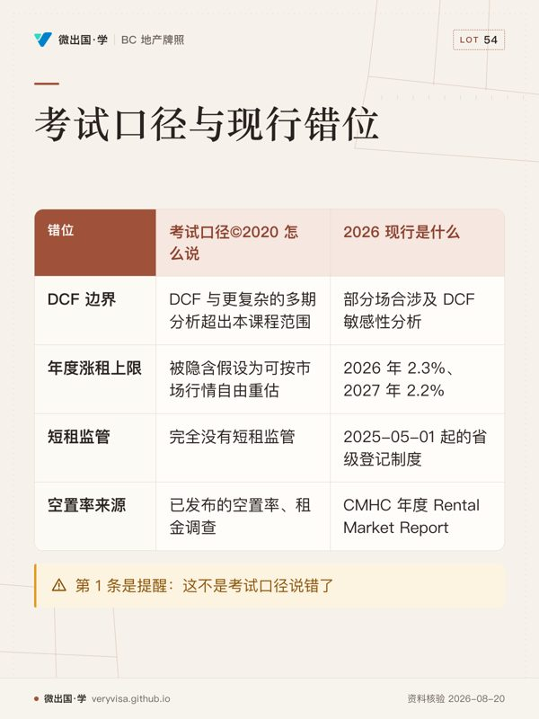
- 先看先看两个带年份的行，数字会随年度或制度生效日变化。
- 易漏涨租上限约束在租客不换情形下；短租收入还受主居所要求限制。
- 下一步去讲义核对当年最新一期，再做练习。
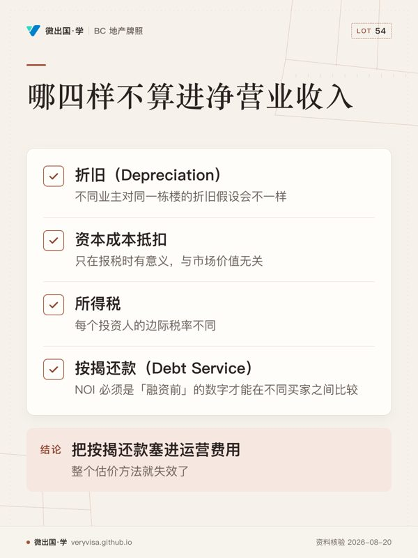
- 先看先看按揭还款，它最容易和具体贷款的现金流混在一起。
- 易漏净营业收入是对物业全部价值的回报，不是对业主自有资金部分的回报。
- 下一步去练习，把运营费用和融资结构分开再算。
交割：非居民卖家那一行与逐条错位
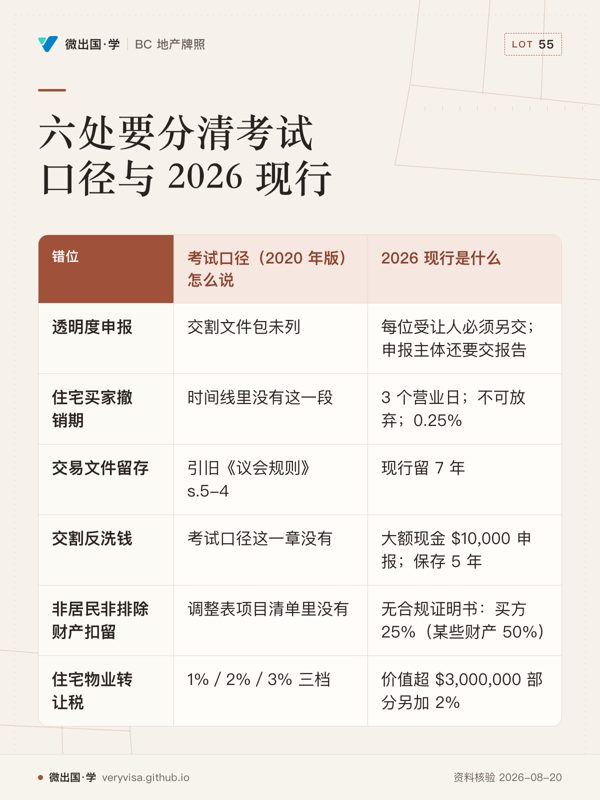
- 先看先扫带金额、比例和年限的行；这些最容易把历史口径带进现行判断。
- 易漏业主补助金额同；本卡没画申请方式、登记拒绝与佣金时点，仍要回正文核对。
- 下一步去讲义，按题干时期把每一行归到历史列或现行列。
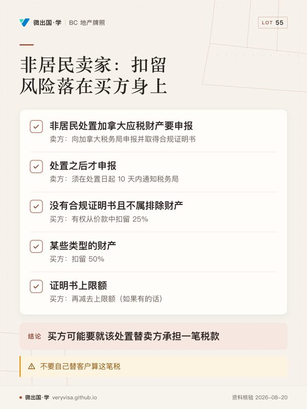
- 先看先看结论条，再倒推哪些事实会让交割款需要被留住。
- 易漏税务居民身份不等于国籍，也不等于有没有枫叶卡；不要自己判断谁算非居民。
- 下一步去练习，带着「何时触发扣留」的问题再做交割题。
营销：一句广告词踩着三条法律
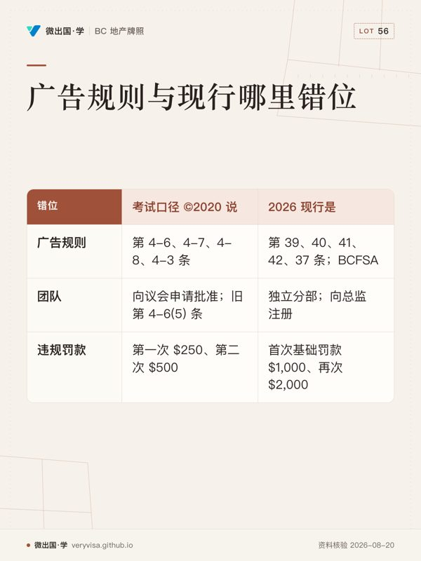
- 先看先看罚款一行，金额结构变化最容易形成判断。
- 易漏别只盯条号：团队从命名审批升格为独立分部，监管主体也换了。
- 下一步去讲义核对依据与生效日，再把旧说法带进模考检验。
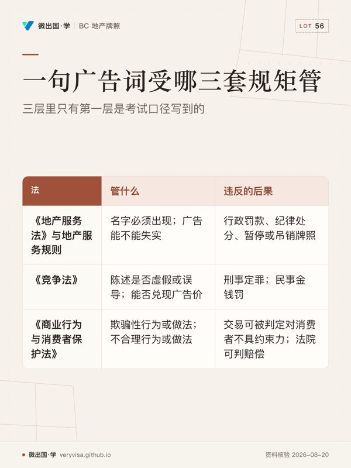
- 先看先横着看三行：同一营销内容会落入不同监管范围。
- 易漏后两层不是地产牌照法的一部分，但仍可能进入民事或行政程序。
- 下一步去练习把一条广告分别归到执业、竞争和消费者保护问题。
技术与持牌人：群发之前先过三道门
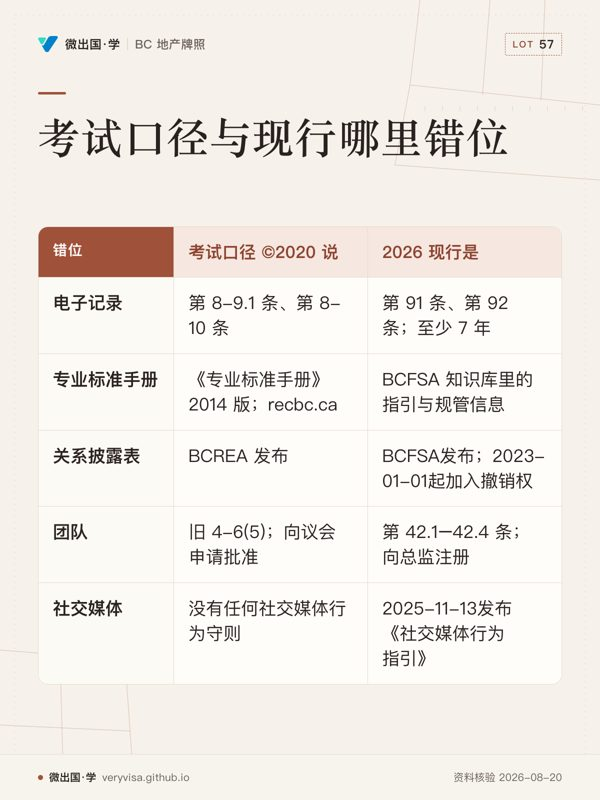
- 先看先看最后一行，它代表旧口径完全没有的一类规则。
- 易漏电子记录还牵涉保存年限和索要打印件的主体，不只是编号。
- 下一步去讲义核对依据与生效日，再把差异放进模考判断。
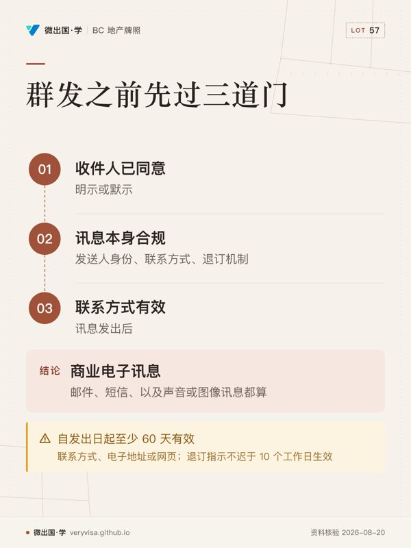
- 先看先看期限条，它区分发送当下和发出后的持续有效要求。
- 易漏退订还要求零成本、同一种电子方式，也不得要求收件人再做额外动作。
- 下一步去练习检查群发场景，再带退订机制问题找持牌专业人士。